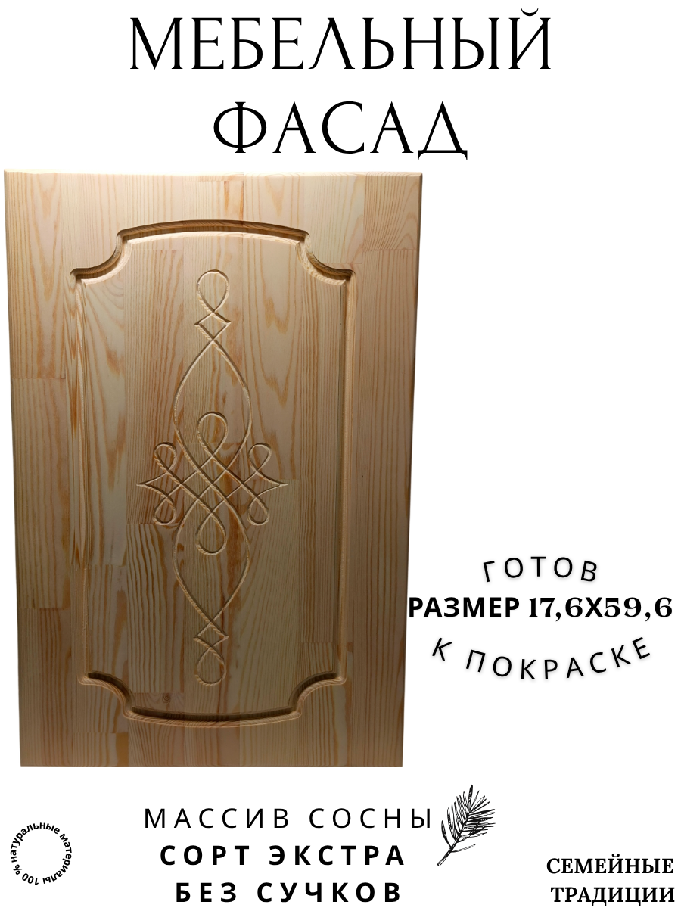
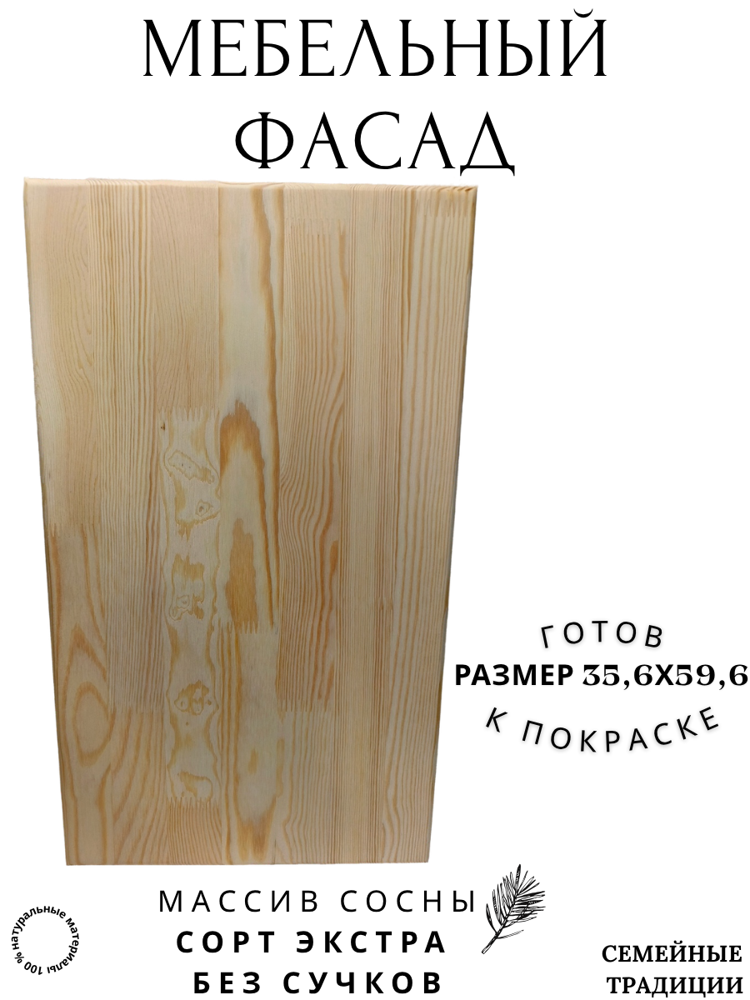

Фигурные фасады из сосны экстра
Модели МФ2–МФ6 — это выразительный профиль и натуральная текстура дерева. Подходят для кухонных гарнитуров, шкафов, комодов. Изготавливаем по вашим размерам, подбираем покрытие: пищевое масло, лак или воск.
Преимущества фасадов из массива
- Натуральный массив сосны без склеек низкого сорта
- Стабильная геометрия и надёжная фрезеровка
- Покрытие, безопасное для мебели в жилых помещениях
- Возможность индивидуального заказа по размерам и оттенку
Модели фасадов


Фасад МФ5: Фрезеровка дополненая центральным элементом, массив сосны
Купить на Wildberries

Фасад МФ6: Без фрезеровки, края закруглены, массив сосны класс Экстра
Купить на Wildberries
Заказать фасады по размерам
Для индивидуальных проектов напишите на почту или в мессенджер — согласуем профиль, покрытие и сроки изготовления.